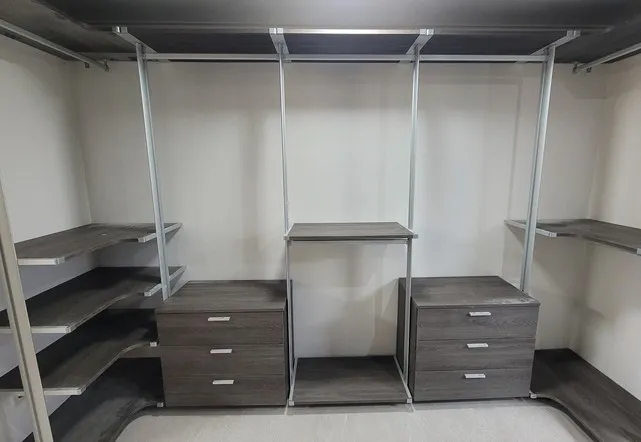

Estimate
드레스룸 이전설치
견적
사진을 잘 보내면 견적이 빠르고 정확해집니다.
드레스룸 이전설치 견적은 현장을 봐야만 나온다고 생각하기 쉽지만, 필요한 사진과 치수가 있으면 문자로 먼저 안내받을 수 있습니다. 반대로 사진이 부족하면 확인할 것이 늘어나 견적이 늦어집니다.
이 페이지에는 견적에 꼭 필요한 사진과 정보를 정리했습니다. 아래 순서대로 보내주시면 코니처가 작업 범위와 견적을 안내해 드립니다.

Situations
견적 문의 전에 준비하면 좋은 것
정면 전체 사진
행거 전체가 한 장에 나오게 조금 떨어져서 찍어 주세요.
부속 사진
서랍장, 거울, 화장대가 있으면 따로 한 장씩 찍어 주세요.
새 공간 사진
설치할 벽이 보이게 찍고 벽 폭을 적어 주세요.
주소와 일정
두 집의 동 이름과 희망 날짜를 알려주세요.
Checklist
견적 문자에 넣을 내용
| 항목 | 예시 | 없으면 생기는 일 |
|---|---|---|
| 현재 행거 사진 | 정면 1장 + 부속 1장 | 칸 수를 알 수 없어 견적이 늦어집니다 |
| 새 공간 치수 | 벽 폭 240cm, 천장 230cm | 설치 가능 여부를 판단하기 어렵습니다 |
| 층수·엘리베이터 | 5층, 엘리베이터 있음 | 운반 방법을 정할 수 없습니다 |
| 지역 | 서울 ○○동 → 경기 ○○동 | 이동 시간을 알 수 없습니다 |
| 희망 일정 | 이사 날짜, 입주 날짜 | 일정 조율이 늦어집니다 |
Process
견적을 받는 순서
문자 보내기
위 표의 내용을 사진과 함께 보내주세요.
추가 질문
사진으로 안 보이는 부분만 짧게 여쭤봅니다.
견적 안내
작업 범위와 견적을 문자로 안내합니다.
일정 확정
견적을 보시고 결정하시면 날짜를 정합니다.
방문 작업
정한 날짜에 방문해 작업합니다.
FAQ
자주 묻는 질문
방문 견적도 되나요?
먼저 사진으로 안내를 드리고, 사진만으로 판단이 어려운 경우에는 방법을 따로 말씀드립니다.
견적을 받으면 꼭 진행해야 하나요?
아닙니다. 견적을 보시고 결정하시면 됩니다.
사진이 어두워도 되나요?
불을 켜고 조금 떨어져서 찍어 주시면 됩니다. 연결 부분이 보이면 더 좋습니다.
평면도가 있으면 보내도 되나요?
네, 새 집 평면도에 설치할 벽 위치를 표시해서 보내주시면 도움이 됩니다.
견적은 얼마나 걸리나요?
사진과 정보가 충분하면 확인하는 대로 답장드립니다.